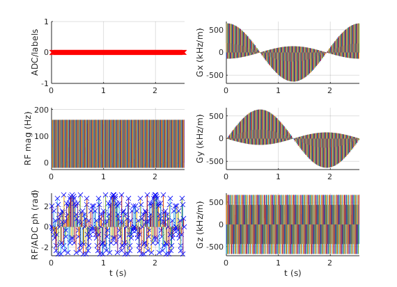
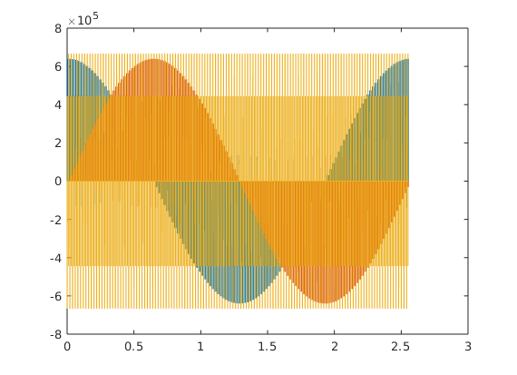
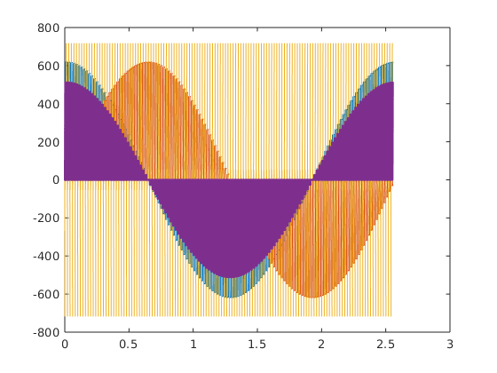
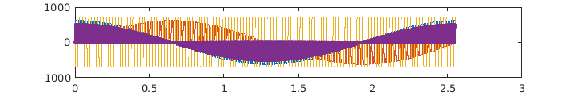

Contents
seq=mr.Sequence();
fov=250e-3; Nx=256;
alpha=10;
sliceThickness=3e-3;
TR=10e-3;
Nr=128;
delta= 2* pi / Nr;
ro_duration=2.4e-3;
ro_os=2;
ro_asymmetry=0.97;
minRF_to_ADC_time=50e-6;
rfSpoilingInc=117;
sys = mr.opts('MaxGrad', 28, 'GradUnit', 'mT/m', ...
'MaxSlew', 100, 'SlewUnit', 'T/m/s', 'rfRingdownTime', 20e-6, ...
'rfDeadTime', 100e-6, 'adcDeadTime', 10e-6);
[rf, gz, gzReph] = mr.makeSincPulse(alpha*pi/180,'Duration',1e-3,...
'SliceThickness',sliceThickness,'apodization',0.5,'timeBwProduct',2,...
'centerpos',1,'system',sys);
Nxo=round(ro_os*Nx);
ro_asymmetry = round(ro_asymmetry*Nxo/2)/Nxo*2;
deltak=1/fov/(1+ro_asymmetry);
ro_area=Nx*deltak;
gx = mr.makeTrapezoid('x','FlatArea',ro_area,'FlatTime',ro_duration,'system',sys);
adc = mr.makeAdc(Nxo,'Duration',gx.flatTime,'Delay',gx.riseTime,'system',sys);
gxPre = mr.makeTrapezoid('x','Area',-(gx.area-ro_area)/2 - ro_area/2*(1-ro_asymmetry),'system',sys);
gxSpoil=mr.makeTrapezoid('x','Area',0.2*Nx*deltak,'system',sys);
TE = gz.fallTime + mr.calcDuration(gxPre,gzReph)+gx.riseTime + adc.dwell*Nxo/2*(1-ro_asymmetry);
delayTR=ceil((TR - mr.calcDuration(gxPre,gzReph) - mr.calcDuration(gz) ...
- mr.calcDuration(gx))/seq.gradRasterTime)*seq.gradRasterTime;
assert(all(delayTR>=mr.calcDuration(gxSpoil)));
fprintf('TE= %d us\n', round(TE*1e6));
if mr.calcDuration(gzReph) > mr.calcDuration(gxPre)
gxPre.delay=mr.calcDuration(gzReph) - mr.calcDuration(gxPre);
end
rf_phase=0;
rf_inc=0;
for i=1:Nr
for c=1:2
rf.phaseOffset=rf_phase/180*pi;
adc.phaseOffset=rf_phase/180*pi;
rf_inc=mod(rf_inc+rfSpoilingInc, 360.0);
rf_phase=mod(rf_phase+rf_inc, 360.0);
gz.amplitude=-gz.amplitude;
gzReph.amplitude=-gzReph.amplitude;
seq.addBlock(rf,gz);
phi=delta*(i-1);
gpc=gxPre; gps=gxPre; gpc.amplitude=gxPre.amplitude*cos(phi); gps.amplitude=gxPre.amplitude*sin(phi); gps.channel='y';
grc=gx; grs=gx; grc.amplitude=gx.amplitude*cos(phi); grs.amplitude=gx.amplitude*sin(phi); grs.channel='y';
gsc=gxSpoil; gss=gxSpoil; gsc.amplitude=gxSpoil.amplitude*cos(phi); gss.amplitude=gxSpoil.amplitude*sin(phi); gss.channel='y';
seq.addBlock(gpc,gps,gzReph);
seq.addBlock(grc,grs,adc);
seq.addBlock(gsc,gss,mr.makeDelay(delayTR));
end
end
seq.plot();
TE= 498 us

plot gradients to check for gaps and optimality of the timing
gw=seq.gradient_waveforms();
figure; plot(gw');

trajectory calculation
[ktraj_adc, ktraj, t_excitation, t_refocusing, t_adc] = seq.calculateKspace();
time_axis=(1:(size(ktraj,2)))*sys.gradRasterTime;
figure; plot(time_axis, ktraj');
hold; plot(t_adc,ktraj_adc(1,:),'.');
figure; plot(ktraj(1,:),ktraj(2,:),'b');
axis('equal');
hold;plot(ktraj_adc(1,:),ktraj_adc(2,:),'r.');
seq.setDefinition('FOV', [fov fov sliceThickness]*1e3);
seq.setDefinition('Name', 'ute');
seq.write('ute.seq');
Current plot held
Current plot held
 